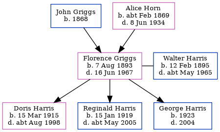

Florence May Harris (née Griggs) 1893 - 1967
[ Home ] | [ Calendar ] | [ Surnames Index ] | [ Family History ]The 2nd of 8 children of John Griggs (a general laborer) and Alice Horn, Florence Griggs, the second cousin twice-removed on the father's side of <a href="I1.html">Nigel Horne</a>, was born in Margate, Kent, England on Aug 7, 1893<span class="citation">1,2,3,4,5</span>, was baptized there at St John The Baptist Church on Aug 30, 1893 and married Walter Harris (a general post office cleaner with whom she had 3 children: <a href="I2978.html">Doris Louvain</a>, <a href="I3404.html">Reginald Walter</a> and <a href="I3405.html">George William</a>) in Thanet, Kent, England around Aug 1915<span class="citation">7</span>.</p><p>Florence spent all of her life in Kent, England. Throughout her life, she lived in several places around the county: on 103 Milton Road in Margate on Mar 31, 1901<span class="citation">1</span> and on Apr 2, 1911<span class="citation">8</span>; on 124 Byron Road in Margate on Jun 19, 1921<span class="citation">9</span>; at 6 Randolph Square in Margate on Sep 29, 1939<span class="citation">2</span>; and at 38 Watermans Cottages, Penge in 1967. <p>She died on Jun 16, 1967 in Thanet<span class="citation">6</span>.
Parents
- John Edward was born in 1868
- Alice Clara was born c. Feb 1869
Children
- Doris Louvain was born on Mar 15, 1915
- Reginald Walter was born on Jan 15, 1919
- George William was born in 1923
Citations
- 1901 England, Wales & Scotland Census - Findmypast (was age 7 and the daughter of the head of the household)
- 1939 Register - Findmypast (was the wife of the head of the household)
- England & Wales births 1837-2006 - Findmypast
- Kent Baptisms - Findmypast
- Kent, Canterbury Archdeaconry baptisms 1538-1912 - Findmypast
- England & Wales deaths 1837-2007 - Findmypast
- England & Wales Marriages 1837-2005 - Findmypast
- 1911 Census for England & Wales - Findmypast (was age 17 and the daughter of the head of the household)
- 1921 Census Of England & Wales - Findmypast (was age 27 and the daughter of the head of the household)
Media
Florence May Griggs - Probate

Kent, Canterbury Archdeaconry baptisms 1538-1912 - GBPRS/CANT/B/96227789
England & Wales births 1837-2006 - BMD/B/1893/3/AZ/000237/308
1901 England, Wales & Scotland Census - GBC/1901/0007426806
Kent, Canterbury Archdeaconry baptisms - GBPRS/CANT/B/96278811
England & Wales marriages 1837-2005 - BMD/M/1915/3/AZ/000582/110
1939 Register - TNA/R39/1755/1755A/004/28
England & Wales deaths 1837-2007 - BMD/D/1968/2/AZ/000400/176
England Births & Baptisms 1538-1975 - R_884646898
1921 Census Of England & Wales - GBC/1921/RG15/04442/0785/07
Family Tree
Generated by Ged2Site. Last updated on Jul 20, 2025